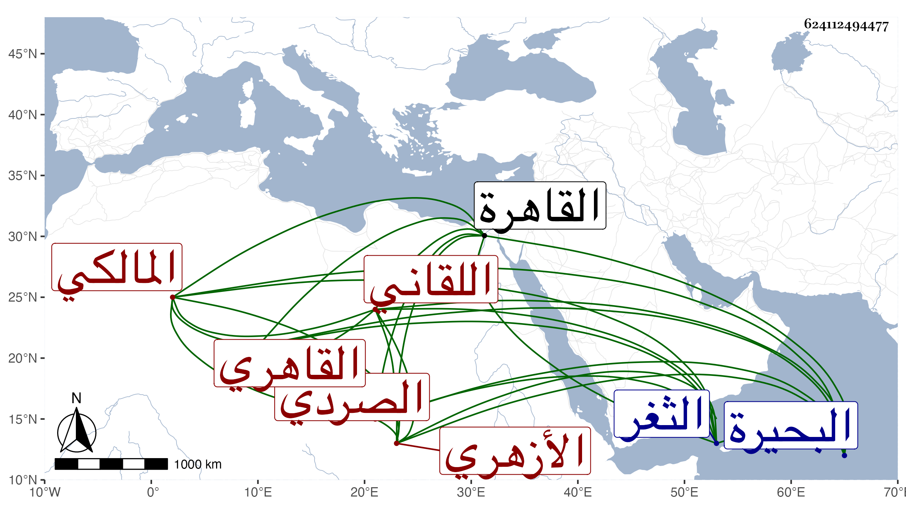

0902Sakhawi.DawLamic.ITO20230111-ara1.EIS1600.624112494477
Biography ID: 624112494477
565
محمد بن حسن بن علي بن عبد الرحمن الشمس بن البدر الصردي الأصل اللقاني ثم القاهري الأزهري المالكي ويعرف في بلده بالصردي وهنا باللقاني . ولد وقت صلاة الجمعة عاشر المحرم سنة سبع وخمسين وثمانمائة بلقانة من البحيرة ونشأ بها فحفظ القرآن والشاطبية والرسالة ثم قدم القاهرة بإشارة بلدية البرهان القاضي فحفظ أيضا مختصر خليل وألفية النحو وأخذ عنه وعن السنهوري الفقه ولازمهما وعن ثانيهما العربية وكذا أخذها مع الأصول عن الجوجري والمنطق عن التقي الحصني ، وحضر دروس العلاء الحصني فيه وفي أصول الدين وأخذ جل المختصر عن الكمال بن أبي شريف ، والفرائض والحساب عن البدر المارداني وبعضهما في الثغر السكندري عن الشمس محمد بن شرف المالكي وجلس بباب اللقاني أيام قضائه واختص به وبعد ذلك جلس ببعض الحوانيت ، وحج في سنة أربع وتسعين وأثكل ولدا له اسمه أحمد قريب المراهقة في سابع عشر ربيع الثاني من التي بعدها وقرأ على بعض كتابي إرتياح الأكباد وتناوله مني ، وهو إنسان فاضل عاقل ممن جدد من النواب .
